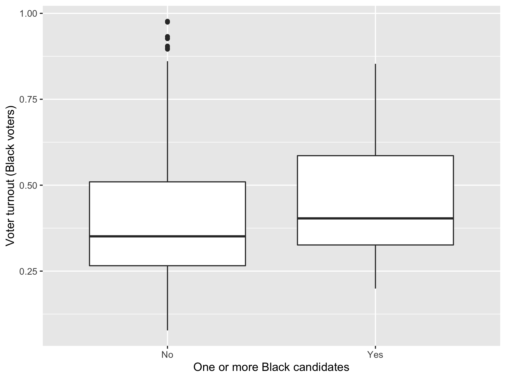
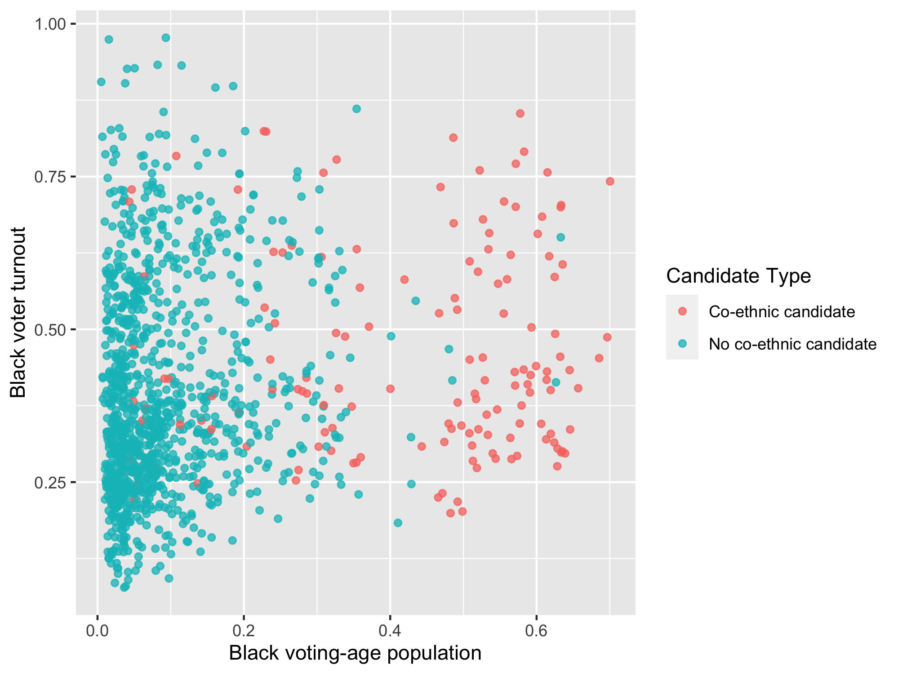

fit_1 |>
broom::tidy() |>
select(term, estimate) |>
knitr::kable(digits = 2)Problem Set 5: Co-ethnic Candidates and Voter Turnout
You can find instructions for obtaining and submitting problem sets here.
You can find the GitHub Classroom link to download the template repository on the Ed Board
Background
For this problem set, we will analyze data from the following article:
Fraga, Bernard. (2015) “Candidates or Districts? Reevaluating the Role of Race in Voter Turnout,” American Journal of Political Science, Vol. 60, No. 1, pp. 97–122.
Fraga assesses the theory that minority voters are more likely to vote in elections featuring co-ethnic candidates. He shows that the association between minority voter turnout and co-ethnic candidates disappears once we take into account district-level racial composition. In particular, he demonstrates that in districts where Black people make up a greater share of the voting-age population, Black voters in that district are more likely to vote in elections regardless of candidate race. Although the main analyses he carries out are a bit more complicated than what have learned in the course, we can replicate his substantive findings using the multiple regression approach we’ve learned.
A description of the variables is listed below:
| Name | Description |
|---|---|
year |
Year the election was held |
state |
State in which the election was held |
district |
District in which the election was held (unique within state but not across states) |
turnout |
The proportion of the Black voting-age population in a district that votes in the general election |
CVAP |
The proportion of a district’s voting-age population that is Black |
candidate |
Binary variable coded “1” when the election includes a Black candidate; “0” when the election does not include a Black candidate |
Question 1 (3 points)
Fraga analyzes turnout data for four different racial and ethnic groups, but for this analysis we will focus on the data for Black voters. Load data/blackturnout.csv and save it as blackturnout.
In the write up, indicate which years are included in the dataset and how many different states are included in the dataset.
Rubric: 1pt for Rmd file compiling (autograder); 1pt for loading data (autograder); 1pt for indicating years in the data and number of states (PDF).
Question 2 (7 points)
Create a boxplot that compares Black turnout in elections with and without a co-ethnic candidate and save the plot as turnout_box. Your plot should look like this:

To create the x-axis variable that is nicely labeled, use mutate() to create a variable that is "Yes" when candidate is 1 and "No" otherwise (it does not matter what this variable is called to the autograder, but don’t overwrite your candidate variable!). Be sure to use informative labels, though they do not have to match the text exactly.
In the write-up, report what the plot tells us about how turnout varies by the presence of a co-ethnic candidate.
Rubric: 4pts for boxplot (autograder); 1pt for informative labels on plot (PDF); 2pts for written description of relationship (PDF).
Question 3 (7 points)
Run a linear regression with Black voter turnout as your outcome variable and candidate co-ethnicity as your predictor. Save this regression as fit_1 and report the coefficients using a nicely formatted table with the following code (you may need to install the broom package to have this work):
Interpret both of these coefficients. Do not merely comment on the direction of the association (i.e., whether the slope is positive or negative). Explain what the value of the coefficients mean in terms of the units in which each variable is measured. Are these results consistent with the prediction that Black voters turn out at higher rates when a co-ethnic candidate is running?
Rubric: 3pts for correct lm output (autograder); 1pt for coefficient table (PDF); 2pt for interpretation of coefficients (PDF); 1pt for conclusions (PDF).
Question 4 (7 points)
You decide to investigate the results of the previous question a bit more carefully because the elections with co-ethnic candidates may differ from the elections without co-ethnic candidates in other ways. Create a scatter plot where the x-axis is the proportion of voting-age population that is Black and the y-axis is Black voter turnout. Color your points according to candidate co-ethnicity. That is, make the points for elections featuring co-ethnic candidates one color, and make the points for elections featuring no co-ethnic candidates a different color. You plot should look like this:

You should save this plot as turnout_scatter and to create better labels for the color of the points, use mutate() in a similar way to question 2.
Answer these questions in the write-up: What does this graph seem to imply about the relationship between Black voting-age population and Black turnout? What does it tell us about the relationship between Black voting-age population and the presence of a Black candidate?
Rubric: 5pts for scatter plot (autograder); 2pts for written conclusions about the plots (PDF).
Question 5 (6 points)
Run a linear regression with Black turnout as your outcome variable and with candidate co-ethnicity and co-ethnic voting-age population as your predictors. Save the output of this regression as fit_2 and report the coefficients using a nicely formatted table with the following code (you may need to install the broom package to have this work):
fit_2 |>
broom::tidy() |>
select(term, estimate) |>
knitr::kable(digits = 2)In the main text, interpret the coefficients on the two predictors, ignoring the intercept for now (you will interpret the intercept in the next question). Explain what each coefficient represents in terms of the units of the relevant variables.
Rubric: 3pts for correct lm output (autograder); 1pt for the coefficient table (PDF); 2pts for correct interpretation of the coefficients (PDF).
Question 6 (2 points)
Now interpret the intercept from the regression model with two predictors. Is this intercept a substantively important or interesting quantity? Why or why not?
Rubric: 1pt for correct interpretation (PDF); 1pt for argument about substantive importance (PDF).
Question 7 (3 points)
Comparing the two regression models you have fit, what do you conclude about the relationship between co-ethnic candidates and Black voter turnout? Do they come to similar or different conclusions about this relationship? Which model do you prefer and why? (Please ignore issues of statistical significance for this question given that it will be covered later in the course.)
Rubric: 3pts for discussion (PDF).